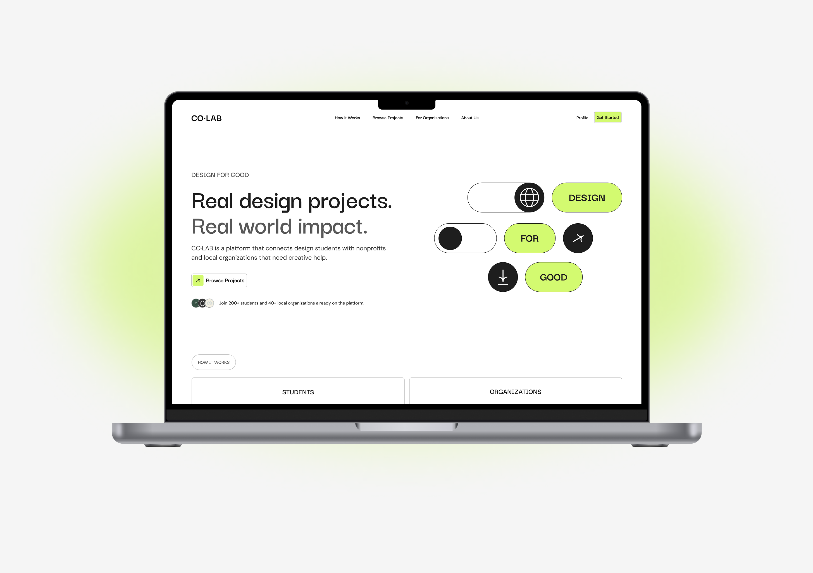
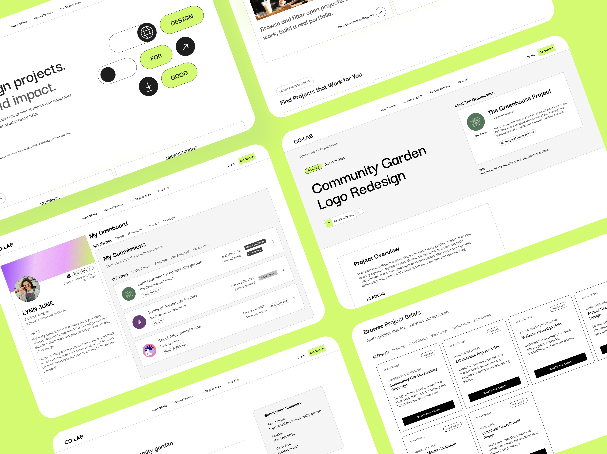
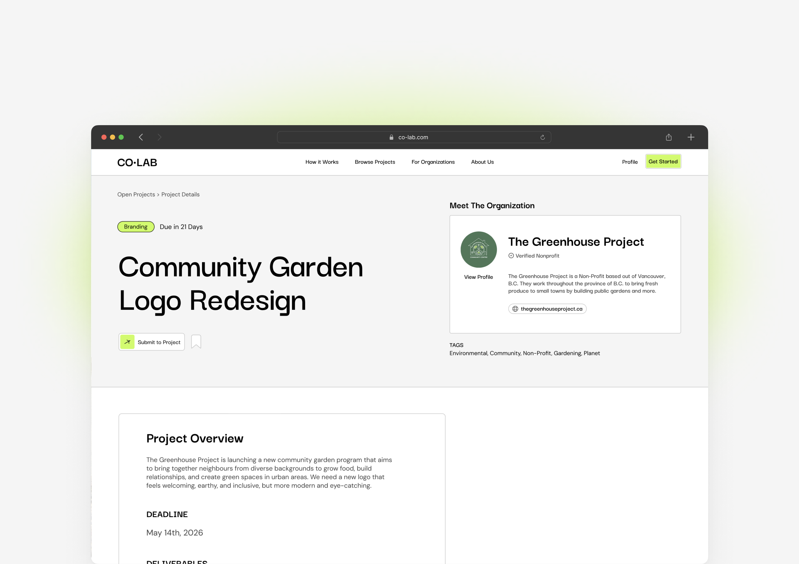
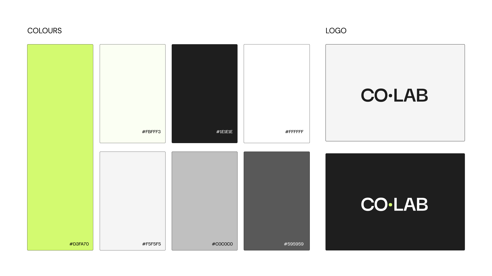
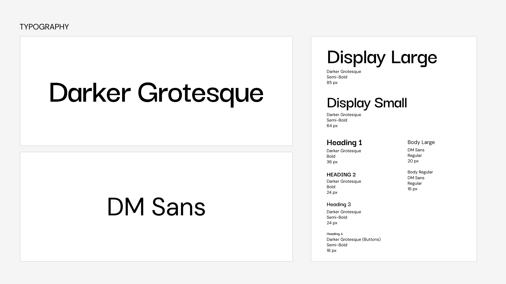
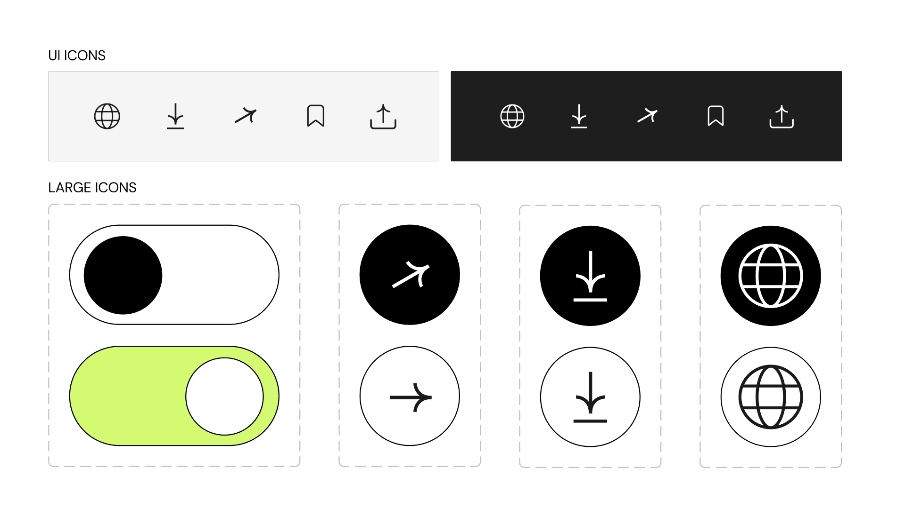
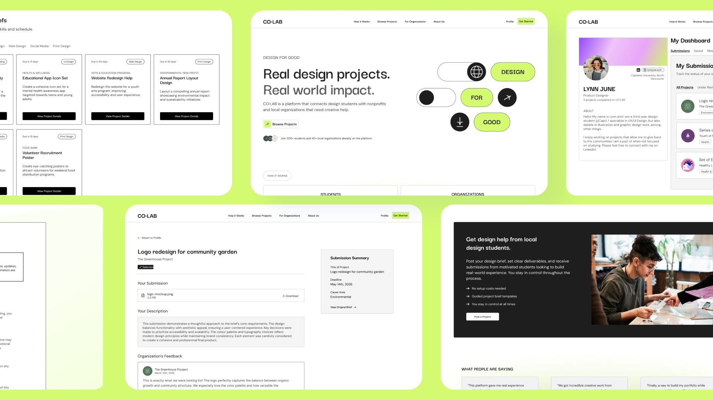

Product design · Capstone · January - April 2026
CO·LAB - Connecting Students and Local Organizations Through Design

Project Details
Timeline
January - April 2026
What I did
Research
Product Design
Prototyping
Tools Used
Figma
FigJam
Overview
CO·LAB was my final semester capstone project. It is a concept for a web platform that matches design students with local organizations who are seeking creative help.
The Problem
Nonprofits often lack budget for dedicated design roles, while students struggle to find projects with real stakeholders and constraints.
I asked myself: how might we help both students seeking more experience and local orgs that don’t have the budget for creative help?
RESEARCH
What I did
I interviewed nonprofits and design students, grouped the notes into themes, and used that to focus CO·LAB on fairness and trust.

MVP DEVELOPMENT
MVP GOAL
Students can find a project they like, understand the requirements, submit work, and understand usage rights.
MVP OUTCOME
User testing went well: testers completed every task without help, understood what the platform was for, and were clear on usage rights. Feedback on my early UI and UX, including text sizing, icons, and button placement, helped refine the final design.

DESIGN SYSTEM
What I did
I pulled together a small design system for CO·LAB so the product would feel consistent as I prototyped: the color palette, logo, typography, and a set of icons for navigation and key moments in the flow.
What I would change
I would like to keep refining this further and bring more personality into the platform over time, but this is what I was working with for the project.



FINAL THOUGHTS
Challenges
My main challenges were time and time management. I got pretty busy with my practicum placement while I was working on this project, so I had to stay honest about how much I could take on.
At times I was indecisive, especially when it came to the design system, and I sometimes focused on things that did not need that much attention yet. I started with a really large scope and had to narrow down a lot on what I could actually make in the time I had.
To conclude
If I had more time to work on CO·LAB, I would like to start with the branding, so it overall feels more connected from screen to screen.
I would also want to work on the flows throughout the site, including onboarding, the organization side, and the profile and dashboard. For now this case study is really my MVP, so those are the pieces I would keep building out next.
